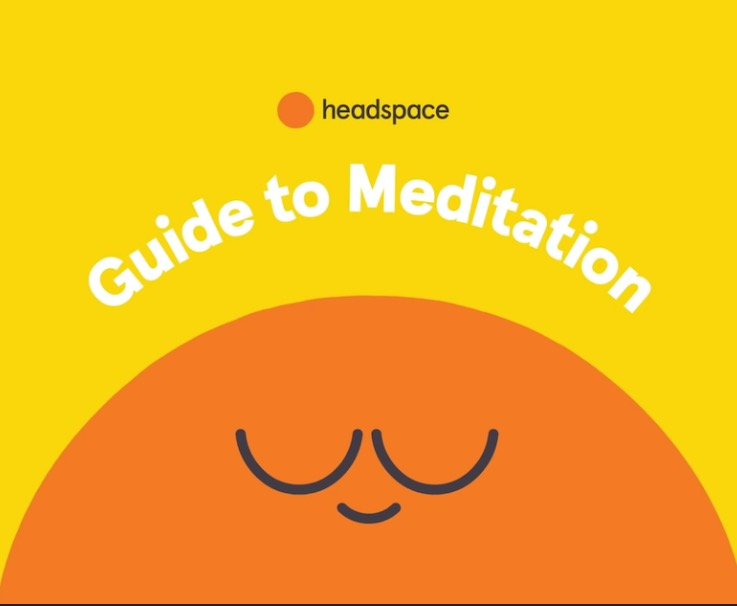

CMHS
The Tufts Counseling and Mental Health Service (CMHS) offers short-term therapy, urgent care, and referrals to off-campus providers. Confidential support is available to all Tufts students.

Ears for Peers
Ears for Peers is a 24/7 anonymous, student-run helpline. Trained listeners are available to talk about anything, big or small—no judgment, just support.

Headspace
Headspace is a mindfulness and meditation app that offers guided exercises to help with stress, focus, and sleep. Free premium access may be available to students.

Calm
The Calm app provides sleep stories, breathing exercises, and meditations to support emotional wellness and better rest.